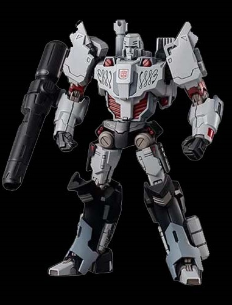
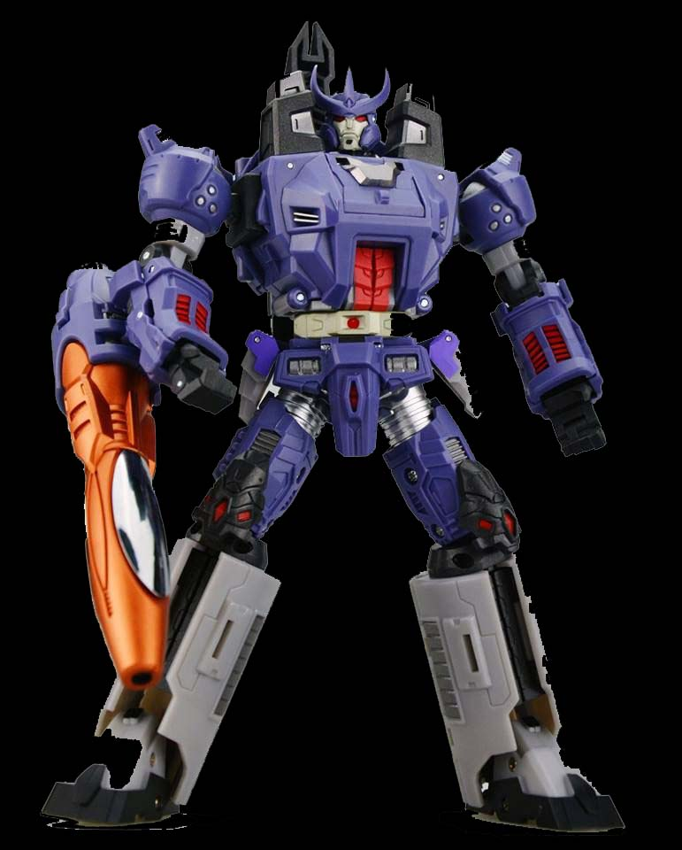
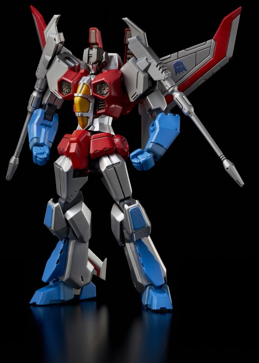

On the run after an unrelated attack on an Autobot Senator after a mining dispute, Megatron stumbled onto underground gladiator games in the state of Kaon and quickly became one of its rising stars. However, it only truly became more than this when Ratbat, then a senator seeing an opportunity for profit, dispatched Soundwave to arm the gladiators. Megatron's forces then began to commit acts of terrorism increasing in scale and daring, attracting the attention of Sentinel Prime. Kidnapping Senator Decimus as a symbol (with the help of new airborne recruit Starscream) Megatron issued a rallying call to the gladiators and their supporters, promising to unite them under one badge and make the whole planet their arena. Sentinel Prime's forces then found and arrested them en masse. This was all part of Megatron's plan: a supposedly informant Starscream massacred the Autobot Senate and freed the prisoners, signalling revolution and anarchy in Kaon. Megatron eventually killed Prime[citation needed] one-on-one as a symbol, and the Decepticons were forged.
In this continuity, there are a number of differences to the traditional norm. The Decepticons are no longer based on Cybertron due to its devastation by rogue scientist Thunderwing. Instead, they have spread out through the galaxy, using their transforming abilities to infiltrate target worlds (such as Earth or Nebulos) disguised as local vehicles and equipment. They then use their modes to create conflict, leading to complete anarchy as the world's political and social systems collapse. The Decepticons then move in and harvest the world's raw resources. How the world is pacified is unknown, although The Transformers: Spotlight issue on Sixshot revealed he is often sent in to complete the destruction of entire worlds. As in other continuities, Megatron is in command, and thus far has had to deal with the rebellion of Starscream's Earth infiltration unit and the reemergence of Thunderwing, as well as moving on to Earth in order to harvest the extremely powerful Energon variant Ore-13, something which promises to give the Decepticons a significant edge over the Autobots.
The IDW continuity is unique in that it portrays the Decepticons as originally a force for good, standing up against oppression, who eventually themselves became oppressors. A large number of those who would become Autobots, including Optimus Prime himself, even support the Decepticon cause in the beginning, before it turns violent.
|  | megatron |
|  | galvatron |
|  | starscream |